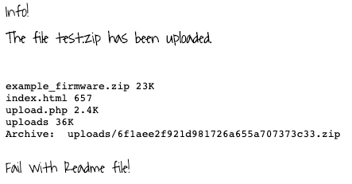
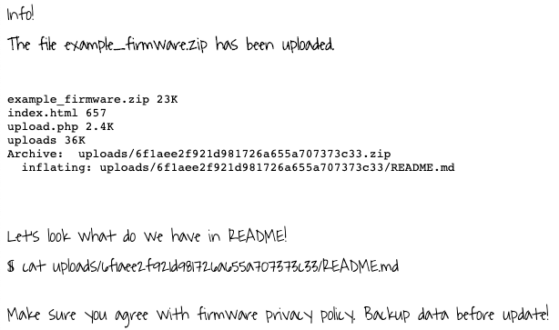
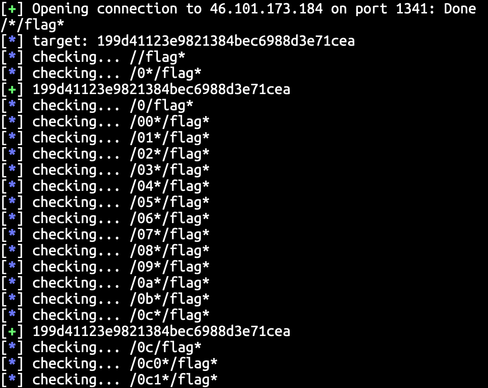

Link: https://2019.justctf.team/
這算是我第一場（比較認真打的）CTF 比賽，於是來發一個公開的 writeup 吧！
我和 3 個同學組隊參加這場比賽，順便當成計算機安全課程 Final CTF 的賽前練習。
Sanity check
這場比賽的簽到題，雖然說是簽到題，雖然算是簽到題但 flag 也沒那麼好找啦！discord 上面就有一些人哀嚎解不出這題 😂。
這題的 flag 其實就是在比賽規則中寫的範例 flag：justCTF{something_h3re!}，還好我看規則時有試著把範例 flag 貼上去看看，所以沒被這題卡住 :) 。
Will it stop?
題目大意
這題的概念大概是：把你的 code 傳上對方的伺服器，然後它會幫你編譯。就 PDF 中的故事而言，它理論上還會在伺服器上執行你的程式，但實際上假如你上傳一個能夠成功編譯的程式碼上去，linker 會報錯（根據 discord，這是正常的），所以這題是要你在 compile 階段去攻下 flag。
解題過程
這是我一開賽就看的題目，那時候也沒注意到這題的難度被歸類為 Medium 而非 Easy，覺得有趣就看了。
看到這題我就馬上想到用 #include "path/to/flag" 的方式來讓我輸出機器上的檔案，然而我卻猜不到 flag 在哪裡。根據題目中的提示，flag 在使用者的家目錄，然而我卻沒辦法猜出使用者名稱，我試著研究了一些 GCC 的 pragma，沒有一個能夠幫助我找到使用者名稱或工作目錄等有用的資訊。
星期六晚上回來和隊友討論這題（當天下午有別的事情就沒參賽），隊友建議我看看 /etc/passwd，於是就輕鬆看到了以下資訊（使用者名稱）：1
2
3
4
5
6
7
8
9
10How many lines does your C program parsing a Python code have?
1
Write your program now:
#include "/etc/passwd"
Ok, let's build it!
In file included from <stdin>:1:0:
/etc/passwd:1:8: error: expected '=', ',', ';', 'asm' or '__attribute__' before ':' token
aturing:x:1000:1000::/home/aturing:/bin/sh
^
COMPILATION FAILED
起初，我其實嘗試過 include /proc/self 底下的東西，但找不到檔案，接著就沒繼續嘗試 include 系統文件了。果然有隊友討論很重要，否則這題卡在這點上就太虧了！
接著，我知道使用者名稱後就嘗試 #include "/home/aturing/flag"，看到以下資料：1
justCTF:is_this_the_real_flag__is_this_just_fantasy__open_your_eyes_look_bellow_in_the_file_and_see
檔案前面被一些沒用的資料擋住了，它要我讀檔案的下半部，但 GCC 編譯錯誤就不輸出後面的資料了，該怎麼辦呢？於是我就用 C 語言的一個大魔法：#define，把第一行變成能夠編譯成功就行了。
我的 payload 和執行結果如下：
1 | How many lines does your C program parsing a Python code have? |
可能因為我之前和同學們有討論過一些 Online Judge 的安全防護和可能的攻擊點有關吧！這題除了找使用者名稱時卡關了一下，整體來說解題過程算很順利，用 include 和 define 的那兩個方法幾乎算是馬上就想到了。這題也是我們隊伍通過的題目中分數最高（解出人數最少）的題目了。
FirmwareUpdater
題目大意
上傳一個 zip 檔，Web 伺服器會解開並且顯示出其中的 README.md。題目提示 flag 在 /etc/flag。
解題過程
在題目頁面中沒有告訴我們要上傳的資料格式是什麼，如果隨意傳一個東西上去，看到的輸出如下：

於是去下載 /firmwareupdater-fail.zip 就有範例檔案了。上傳範例檔案會得知伺服器會把 README.md cat 出來：

接著我實在研究不出 unzip 的過程有什麼能夠攻擊的點，於是又卡題了。
後來和隊友討論了一下，他們查了對 cat 輸出檔案的攻擊方式，發現用 symbolic link 連到目標檔案（flag），就能讓攻擊伺服器讓我們看到本來不該看的到的檔案。然而，他們嘗試製作包含 symbolic link 的 zip 檔時，卻都失敗（因為 zip 指令預設會追蹤 symbolic link）。後來我查到下 zip --symlinks 就能讓 zip file 包含 symbolic link，於是我們讓 README.md 連到 /etc/flag，網站就輸出 flag 了。
Payload 如下：firmwareupdater-payload.zip @ gist
FSMir
題目大意
給你以下 verilog 檔案，要你 Reverse 它：
解題過程
這題一開始是我隊友寫的，我是後來寫”FSMir 2”時才看了這題。
這個 verilog 程式會判斷輸入的 di 是不是合法的 Key（flag），這個硬體每個 clock 會從 di 讀取一個 byte，變數 c 會依據 di 的數值改變，假如 c 從 0 變為 59，solved 就會變成 true。
解法則是依據程式中的邏輯，模擬 di 每個 clock 應該是什麼即可。
FSMir 2
題目大意
和前一題差不多，要你 Reverse 以下 verilog 檔案：
解題過程
這題和前一題很像，不過這個硬體判斷 key 的邏輯變的稍微複雜一點點，c 在同樣狀態時可能會有不只一個合法的 di，然而從 c = 9'b101001101 開始到著做就沒問題了。
這題另一個比較麻煩的地方在於程式碼比較長，所以需要寫程式 parse 它。
以下是解題程式：
md5service
題目大意
這個 md5 service 有兩個功能如下：
MD5 <file> – will return a md5 for a file
READ <file> – will read a file
解題過程
我看了一下不知道這個 service 能做什麼，就沒仔細研究。
不過我隊友通靈出程式檔名是 md5service.py，輸入 READ md5service.py，就能拿到原始碼了。
原始碼如下：
有了原始碼後這題的方向就很明瞭了，READ 操作必須打出明確的檔名，MD5 操作由於是 exec md5sum，所以可以使用 * 當作萬用字元。稍微嘗試一下後，我發現存在這個檔案：/*/flag*，接著我們的目標就是嘗試猜出它的確切檔名了。
我的作法是寫程式每次嘗試一個字元，比如嘗試 MD5 /0*/flag* 能否找到檔案。完整程式如下：

最終，程式會搜出檔名為 /0c8702194e16f006e61f45d5fa0cd511/flag_a6214417905b7d091f00ff59b51d5d78.txt，用 READ 指令讀出它即可。
Matryoshka
題目大意
Look at this picture. Can you get the flag?
解題過程
我覺得 stego 就是通靈題，但這場比賽 Easy 題目就有兩題 stego。
我研究了一陣子，做不出來，隊友拿到 flag 後我才問他們怎麼做的。由於我也花了不少時間研究，所以還是記錄一下吧。
首先用 binwalk 可以發現這張圖裡面還藏了另外兩張 jpeg 檔：1
2
3
4
5
6
7
8
9
10
11
12
13
14
15$ binwalk -Me matryoshka.jpg
Scan Time: 2019-12-23 14:51:07
Target File: /Users/domen/Documents/CTF/justctf/matryoshka/matryoshka.jpg
MD5 Checksum: ac650abfcf82fc1d65a5e2ef63df2eed
Signatures: 391
DECIMAL HEXADECIMAL DESCRIPTION
--------------------------------------------------------------------------------
0 0x0 JPEG image data, JFIF standard 1.01
30 0x1E TIFF image data, little-endian offset of first image directory: 8
292 0x124 JPEG image data, JFIF standard 1.01
322 0x142 TIFF image data, little-endian offset of first image directory: 8
584 0x248 JPEG image data, JFIF standard 1.01
614 0x266 TIFF image data, little-endian offset of first image directory: 8
用 dd 取出兩張圖片如下：

兩張圖中各有一個假的 flag。
接下來的作法是把第二張圖丟到 Jeffrey’s Image Metadata Viewer
，我們就會看到圖片中的 EXIF:ThumbnailImage，這就是第四層的俄羅斯娃娃，也就是真正的 flag 了。